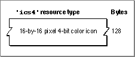

Legacy Document
Important: The information in this document is obsolete and should not be used for new development.
Important: The information in this document is obsolete and should not be used for new development.


The Small 4-Bit Color Icon Resource
A small 4-bit color icon resource is one of several resources that you provide for an icon family. A small 4-bit color icon resource is a resource with the resource type'ics4'. A small 4-bit color icon resource must be marked purgeable, and it must have the same resource ID as the icon list resource that represents the file that the small 4-bit color icon resource also represents.When the user chooses by Small Icon from the View menu, the Finder displays the small 4-bit color icon specified in this resource in windows if the user has a monitor displaying 4 bits of color data per pixel. Similarly, the small 4-bit color icon appears in the Application menu after the user launches the application and in the Apple menu if the user places the application or an alias to it in the Apple Menu Items folder.
A small 4-bit color icon resource is defined to be of type
String[128]; every 4 bits in the string represent a pixel in the 16-by-16 pixel icon. You can use a high-level tool such as the ResEdit application to create small 4-bit color icon resources. You can then use the DeRez decompiler to convert your small 4-bit color icon resources into Rez input when necessary. See "Creating Icons for the Finder" beginning on page 7-10 for information about creating resources for representing files to users.A small 4-bit color icon resource defines one icon, which the Finder uses to display the file it represents. If you examine the compiled version of a small 4-bit color icon resource, as represented in Figure 7-18, you find that it contains only the 16-by-16 pixel 4-bit color icon for display by the Finder. This resource does not specify a mask for the icon; instead, the Finder uses the mask specified for the small icon list resource with the same resource ID number as this resource.
Figure 7-20 Structure of a compiled small 4-bit color icon (
'ics4') resource
The format for the compiled icon list resource is described on page 7-55. The format for the compiled small icon list resource is described on page 7-56.